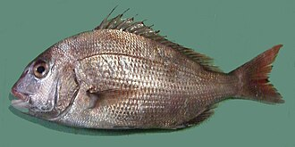

ようしょくまだい（養殖真鯛）の生産量 都道府県ランキング
1位から3位までと、とれた量
ようしょくまだいが日本でいちばん多く育てられているのは愛媛県です。3万9,114 tで、全国（6万8,439 t）の57%を占めます。

| 順位 | 都道府県 | 収獲量 | 全国に占める割合 |
|---|---|---|---|
| 1位 | 愛媛県 | 3万9,114 t | 57% |
| 2位 | 熊本県 | 1万717 t | 16% |
| 3位 | 高知県 | 7,070 t | 10% |
この数字について
- 分類：鯛の仲間
- 全国の収獲量：6万8,439 t
- この数字が表すもの：収獲量（養殖で育てて取り上げた重さ）
- 調査：海面漁業生産統計調査（海面養殖業） 令和6年
- この品目は養殖の統計です。
- 16県分を調査（調査していない県は順位に入りません）
ようしょくまだいの生産量について、よくある質問
- ようしょくまだいの生産量が日本一の都道府県はどこですか？
- 愛媛県です。海面漁業生産統計調査（海面養殖業）（令和6年）で3万9,114 tでした。
- ようしょくまだいの生産量ランキング2位・3位はどこですか？
- 2位は熊本県（1万717 t）、3位は高知県（7,070 t）です。
- ようしょくまだいの全国の生産量はどれくらいですか？
- 6万8,439 t（令和6年）です。